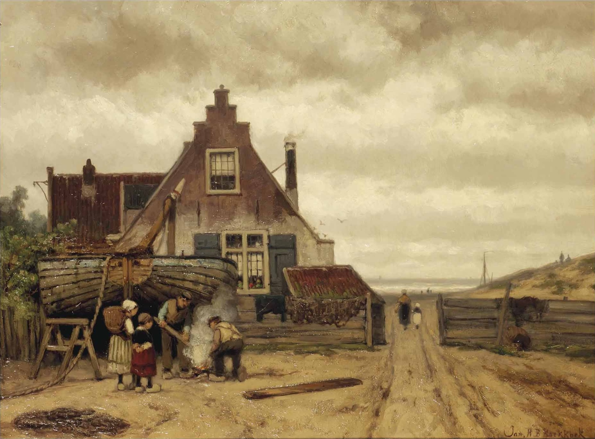
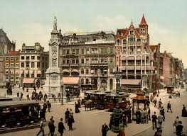
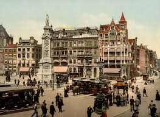
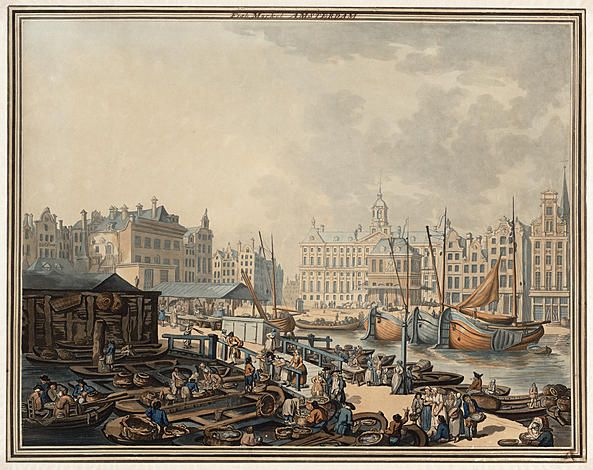
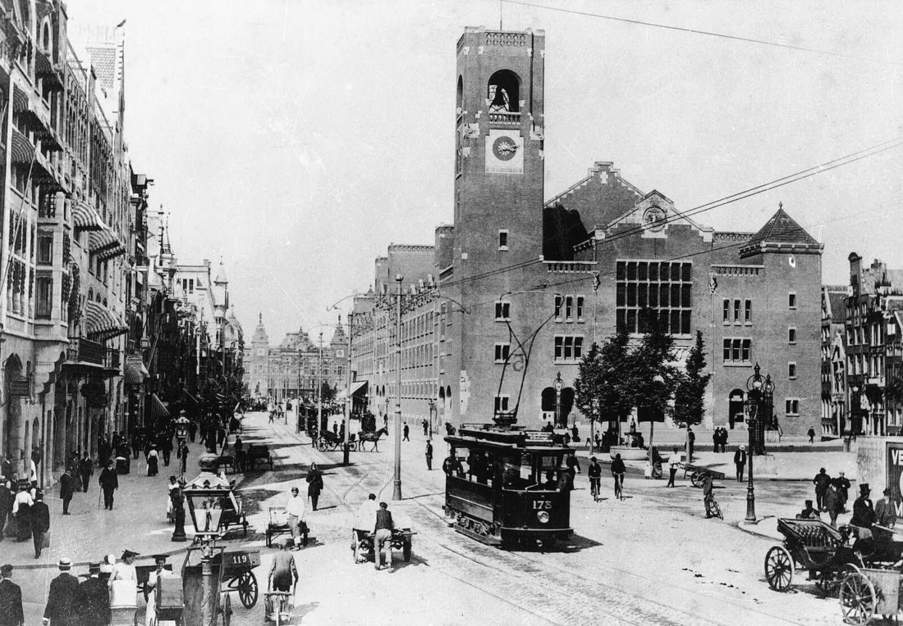
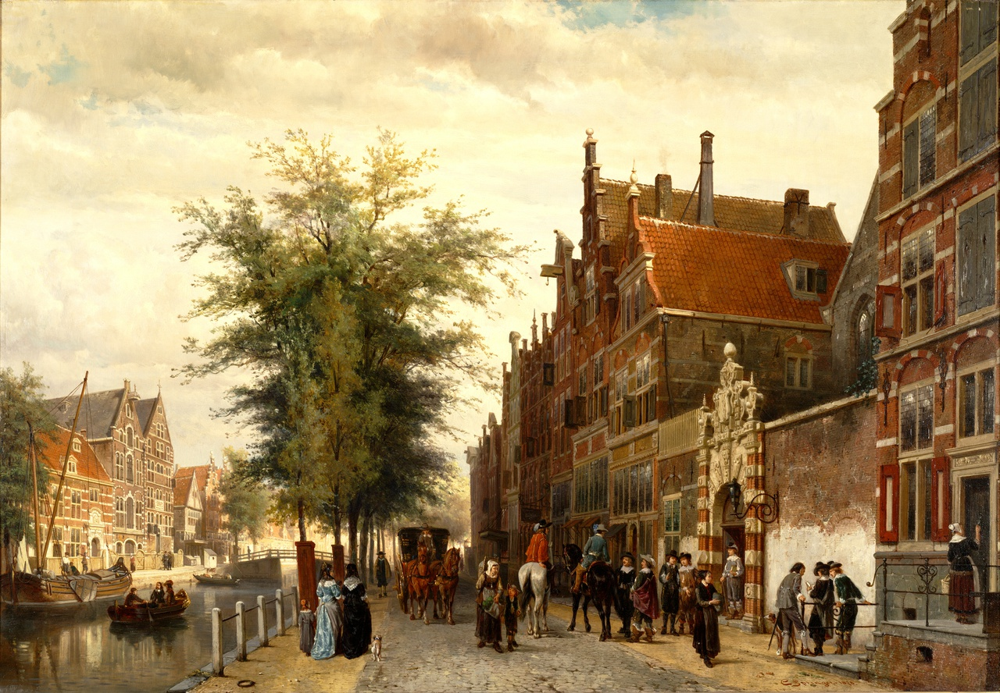
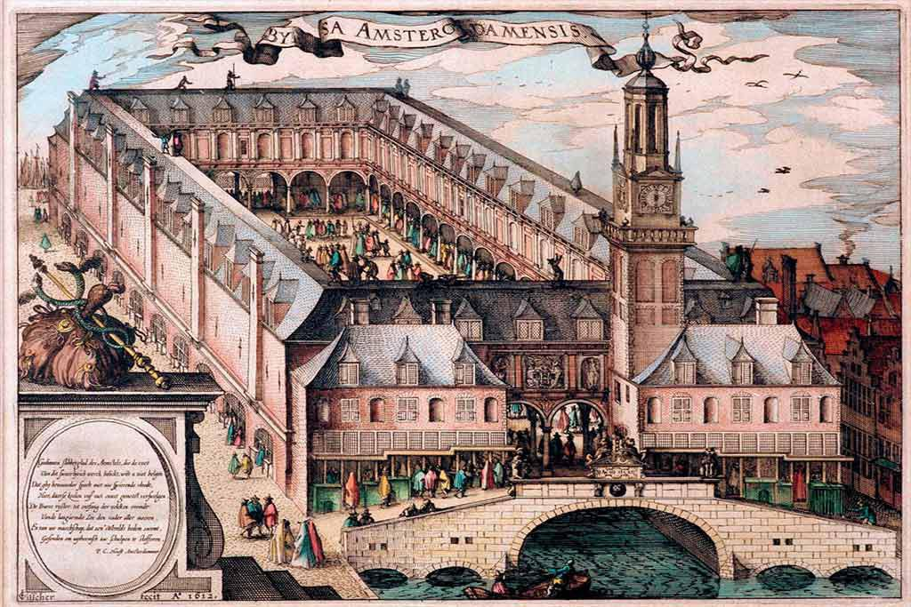
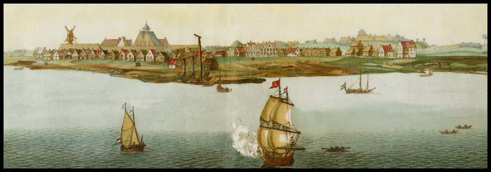
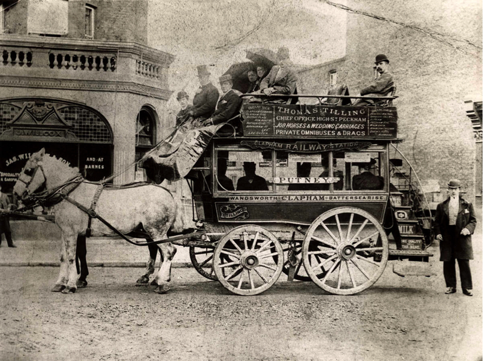

History of Amsterdam
Play soundtrack
Volume:
Legislative history
In the twelfth century, the present province of Holland was for the most part barely habitable. It was a very damp area, mainly consisting of marsh and swamp land. This landscape was intersected by several rivers. One of these was the Amstel river, which flowed into the river the IJ. Towards the end of the twelfth century, a small settlement originated around a dam in the river. Amsterdam owes its name to this dam in the Amstel. Incidentally, this dam is still the most central part of town, but it has been transformed into a square. At the beginning of the thirteenth century, Amsterdam was awarded city rights by the former territorial ruler.
Meanwhile, the town extended slowly from the centre of the Dam. Ramparts were raised and canals were dug. Around 1420, however, the town was already too small. Therefore, a new wall was built on the east side, along the present Geldersekade and Kloveniersburgwal. On the west side, a ditch, a so-called ’singel canal’, was dug. The economic development of the city was not yet progressed very far. They lived mainly of the fishing, especially of herring, and of the beer brewing. Only after Amsterdam was given to the Burgundian Empire of Philips the Good in the fifteenth century, there was an upswing. Amsterdam's harbour had more and more one handling function: fish from the south and grain from the Baltic countries were traded in Amsterdam. The economic boom made sure that Amsterdam, with about thirty thousand inhabitants, grew up to be the largest city in Holland. Europe was dominated by the Reformation in the second half of the sixteenth century. The Netherlands broke away of the Spanish empire during the Eighty Years' War and ended the supremacy of the Catholic Church. Amsterdam was on the Spanish side for a long time in this conflict, but finally, in 1578, connection to the rest of the Netherlands was sought. During this time, Holland was one of the most tolerant regions in Europe. Hence the reason why many persecuted Protestants and Portuguese Jews moved into Dutch cities. Thatwhy many merchants from Antwerp also did businesses in Amsterdam, which created a significant boost for the local economy. The spiritual tolerant climate for which Amsterdam is still known, finds its origin in this period.

 

Click on photo to enlarge.
The Golden Age
The annexation of Portugal to Spain in 1580 forced the northern Netherlands to go to India themselves. The first trips were made from Amsterdam and were immediately a huge success. Encouraged by this result, plans were made everywhere in the country to send more ships to India. Out of all these initiatives, the United East Indian Company (UEIC) was founded in 1602. Amsterdam was responsible for more than half of the total capital that was invested in the new company. Incidentally, not only merchants were involved in the founding of the UEIC. Ordinary citizens also invested in this project. The VOC can therefore be considered as a forerunner of today's joint-stock company.
The seventeenth century was Amsterdam's greatest period of prosperity. Wealth, power, culture and tolerance reached unprecedented heights. Due to the rapid population growth, the city grew steadily. During the seventeenth century, Amsterdam's famous canals were created. Tall buildings were built along the canals. These houses were also built bigger than in other Dutch cities, since it was sponsored by the city authorities, in order to increase the prestige of their own city. Two churches were built during the first half of this century: the Zuiderkerk and the Westerkerk. The old gothic town hall was destroyed by a fire in 1652 and a new town hall was built; the current Paleis op de Dam. The Plaetse, the current Dam Square, was considerably enlarged for the occasion, just like the city. After the Jordaan was built at the end of the seventeenth century, about two hundred thousand inhabitants were living in Amsterdam.
Amsterdam simultaneously experienced a cultural golden age. The economic realities provided a great demand and a corresponding flowering of arts and crafts. Bredero, Vondel and P.C. Hooft wrote their famous works of poetry on paper, while the painter Rembrandt van Rijn and his students worked here, and famous philosophers such as Spinoza and Descartes published their writings.
But just when everything is going very well, you should be cautious. In the catastrophic year of 1672, the powerful Netherlands got involved in a war with France and England. This made the port of Amsterdam inaccessible to the fleet with goods from India. The period of great prosperity ended at the end of the century as well. The economic structures changed; Amsterdam lost its position as a transhipment port for world trade. At the same time however, the money market became increasingly important. Amsterdam blossomed into the financial heart of the world, acting as a banker for the European monarchs who borrowed money for their expensive wars.
  
Click on photo to enlarge.
After 1850
After a relatively quiet period, came then the era of industrialization. After 1850, the population in Amsterdam increased suddenly very strong. Across the country, people moved to the city in search of work. New residential quarters were needed so that town city areas like de Pijp and the Vondelpark emerged. After 1920, the large enlargements followed in the west, south and east. The ‘Plan Zuid’ (Project South) of the famous architect Berlage of this time, is still highly praised nowadays. New neighbourhoods were also built north of the IJ.
One of the darkest chapters in world history then followed, from 1940 on: the Second World War. The population of Amsterdam has suffered greatly during this period. In particular, this applies to the traditionally large Jewish population. Many of them were deported by the occupation forces and killed. Many places in the city, like the Anne Frank house and the Nationaal Monument on Dam Square, the national war memorial, are still a reminder of that terrible time.
After the war, Amsterdam has spread even further. In the sixties, the Bijlmer, a district full of skyscrapers, was built and now a new island in the IJ will be created that will have a building volume of 20,000 new homes.
Amsterdam still has an unchallenged position as cultural heart of the Netherlands. There are orchestras, ballet, theatre, museums and galleries, two universities and many colleges here. Football plays a major role in the lives of many Amsterdamers. During the seventies, the city gained world fame as the home of Johan Cruyff and Ajax. Victories of Ajax or the national team were celebrated in Amsterdam, with true popular feasts. The winning of the title in the European Championship in 1988, after the Russian team was defeated in the final, led to an unbridled revelry in Amsterdam. The conclusion of this analysis is: Amsterdam is and remains the true capital of the Netherlands.
  
Click on photo to enlarge.